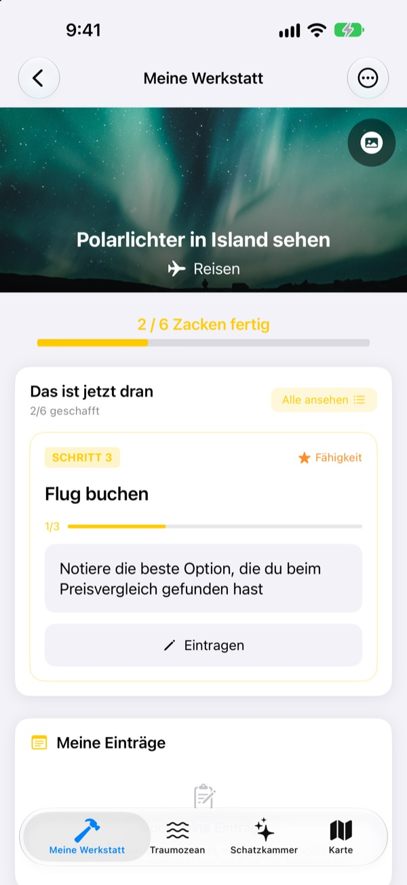
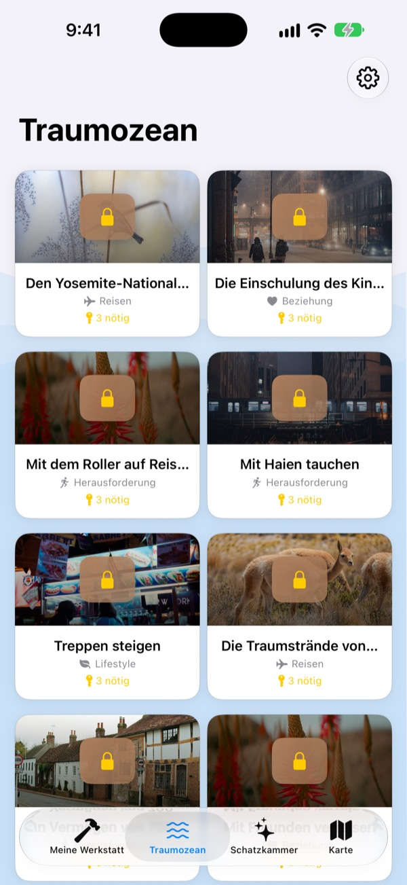
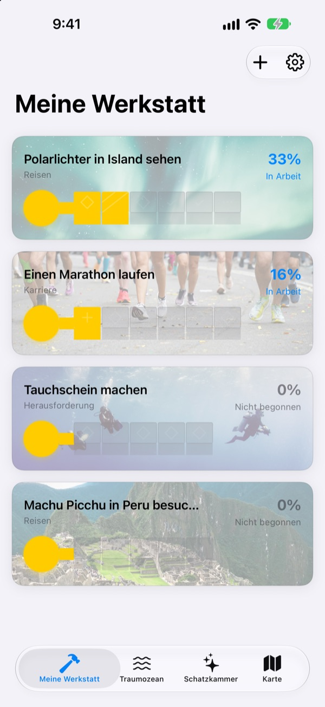
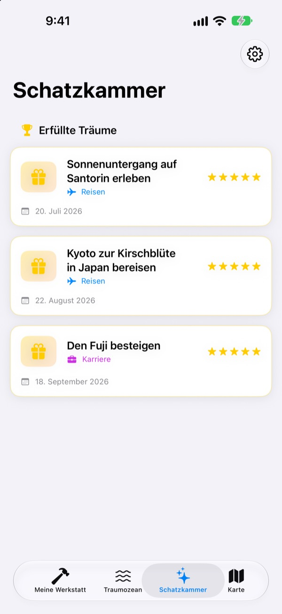

Schreib deine Bucket List
nicht nur auf
Wähle einen Traum, und die kleinen Schritte, die dich hinbringen, werden zu den Zacken eines Schlüssels. Beantworte den Schritt von heute, Frage für Frage, und plötzlich ist die Truhe offen.
Einmal kaufen, alle Funktionen nutzen. Kein Abo, keine Werbung.

Mach den Schlüssel fertig
Beim Traum mit den Polarlichtern fehlen noch zwei Schritte. Beantworte jede Frage mit einer Zeile (oder lass sie leer) und tippe auf „Weiter“. Jeder fertige Schritt füllt eine Zacke, und mit dem vollen Schlüssel öffnest du die Truhe.
Schon mal eine Bucket List geschrieben und vergessen?
„Polarlichter sehen“ ist so groß, dass du nicht weißt, wo du anfangen sollst, also bleibt es jahrelang auf der Liste. Dream Seeker teilt den Traum in Schritte, die du heute schaffen kannst, etwa die Saison prüfen, Geld zurücklegen und Flüge buchen, und zeigt dir nur den einen, der jetzt dran ist.
Über 590 Träume zur Auswahl
Reisen, Erlebnisse, Erfolge, Gesundheit, Lernen und Beziehungen. Träume aus sechs Bereichen treiben in Truhen über den Traumozean. Hol dir einen in deine Werkstatt, und die Schritte dorthin sind schon aufgeteilt.
Dein Traum ist nicht dabei? Leg ihn selbst an, mit Titel, Bereich und den nötigen Schritten.

Eine Zacke nach der anderen, so viel wie heute geht
In „Meine Werkstatt“ siehst du auf einen Blick, wie weit der Schlüssel jedes Traums ist. Der aktuelle Schritt steht ganz oben, und wenn du seine Fragen beantwortest, füllt sich eine Zacke.
Antworten und Fotos sammeln sich in „Meine Einträge“, und im Fortschrittsverlauf siehst du den ganzen Weg zurück.

Erfüllte Träume in die Schatzkammer, Orte auf die Karte
Sind alle Zacken voll, öffnest du die Truhe. Erfüllte Träume sammeln sich mit Datum in der Schatzkammer, und pausierte Träume warten dort, bis du weitermachen willst.
Träume mit einem Ort erscheinen auf der Karte, so siehst du alle Orte, an die du willst.

In drei Schritten loslegen
- 1
Traum wählen
Tippe im Traumozean auf eine Truhe und dann auf „In meine Werkstatt holen“.
- 2
Heutigen Schritt beantworten
Beantworte die Fragen des obersten Schritts nacheinander, dann füllt sich eine Zacke.
- 3
Truhe öffnen
Sind alle Zacken gefüllt, ist der Schlüssel fertig und die Truhe geht auf.
Sechs Bereiche im Traumozean
- Reisen
- Polarlichter in Island sehen · Sonnenuntergang auf Santorin erleben
- Erlebnis
- Fallschirmspringen erleben · Gleitschirmfliegen erleben
- Erfolg
- Einen Marathon laufen · Zum Everest-Basislager wandern
- Gesundheit
- 20 Klimmzüge schaffen · Sixpack bekommen
- Lernen
- Fließend Englisch sprechen · Fließend Französisch sprechen
- Beziehung
- Mit den Eltern um die Welt reisen · Mit Freunden einen Monat auf Jeju leben
Jeder Bereich hat fast hundert Träume. Eigene legst du in „Meine Werkstatt“ mit „Neuen Traum hinzufügen“ an.
Einmal kaufen, alles drin
Die App
- Über 590 Träume mit Fragen zu jedem Schritt
- Eigene Träume
- Meine Einträge mit Fotos und der Fortschrittsverlauf
- Schatzkammer und Karte
- Wachstumsmodus
- Künftige Updates
Entwickler unterstützen (freiwillig)
- Wenn dir die App hilft, kannst du in den Einstellungen ein kleines Trinkgeld geben
- Trinkgeld schaltet nichts frei. Auch ohne bleiben alle Funktionen da
Einmalige Beträge, kein Abo.
In der App kostet nichts extra. Kein Konto, keine Werbung.
Häufige Fragen
Wie fange ich an?
Tippe im Tab „Traumozean“ auf eine Truhe, die dir gefällt, und dann auf „In meine Werkstatt holen“. Beantworte in „Meine Werkstatt“ die Fragen des aktuellen Schritts, und die Zacken füllen sich eine nach der anderen. Sind alle voll, öffnest du die Truhe.
Kann ich eigene Träume hinzufügen?
Ja. Tippe in „Meine Werkstatt“ auf „Neuen Traum hinzufügen“ und gib Titel, Bereich und die Schritte dorthin ein.
Wie pausiere ich einen Traum oder setze ihn fort?
Wähle im Menü eines laufenden Traums „Diesen Traum aufgeben“. Er landet dann unter „Pausierte Träume“ in der Schatzkammer. Dort holst du ihn mit „Neu starten“ zurück in deine Werkstatt oder entfernst ihn mit „Endgültig löschen“.
Was ist der Wachstumsmodus?
Eine Ansicht, in der du deine Träume wie eine Bergbesteigung verwaltest. Du schaltest ihn unter Einstellungen > Anzeige ein oder aus. Dort planst du Fristen für jeden Schritt und Hindernisse wie Kosten und Zeit wie ein Projekt.
Fotos werden nicht angezeigt.
Manche Hintergrundbilder werden aus dem Internet geladen. Prüfe, ob du online bist. Ohne Verbindung erscheint ein Standardbild.
Kann ich meine Einträge auf ein neues iPhone mitnehmen?
Deine Einträge liegen nur auf diesem Gerät, ohne Konto oder Sync. Stellst du ein neues iPhone aus einem iCloud- oder Computer-Backup wieder her, kommen sie mit deinen anderen App-Daten mit.
Kann man in der App etwas kaufen?
Nein. Mit der App gehören dir alle Funktionen. Das Trinkgeld in den Einstellungen ist nur da, wenn du Danke sagen möchtest.
Werden meine Träume und Einträge irgendwohin gesendet?
Nein. Es gibt kein Konto, keine Werbung und keine Analyse-Tools. Träume, Einträge und Fotos bleiben auf deinem Gerät.
Wie erreiche ich euch?
Fehler, Ideen oder sonst etwas: Schick es über „Feedback senden“ in den Einstellungen der App oder per Instagram-DM (@lee25_ios).
Fragen oder Probleme? Schreib an leeo@kakao.com.